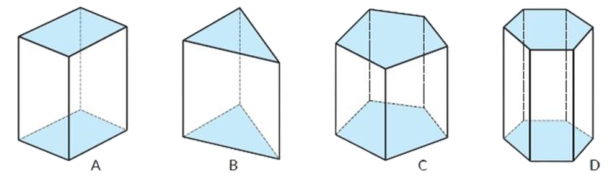
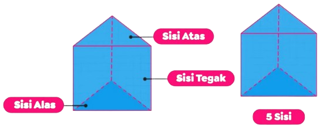
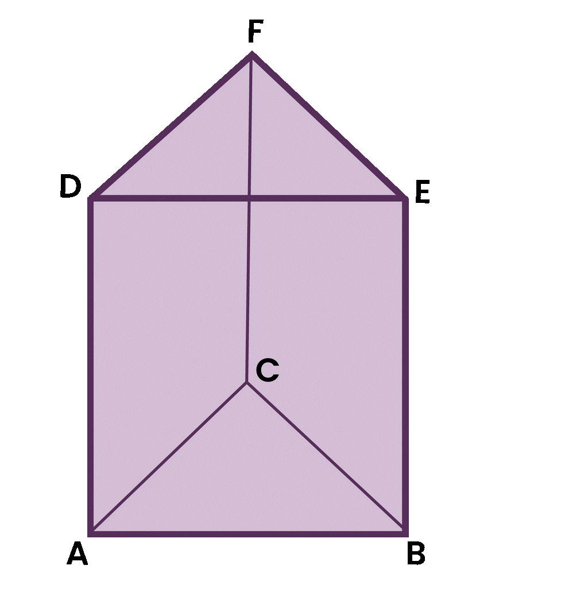
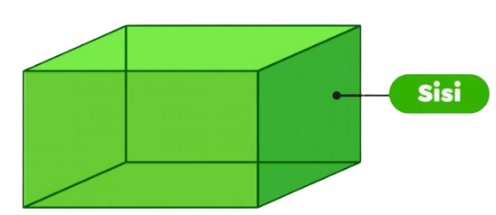
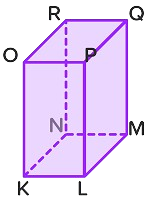
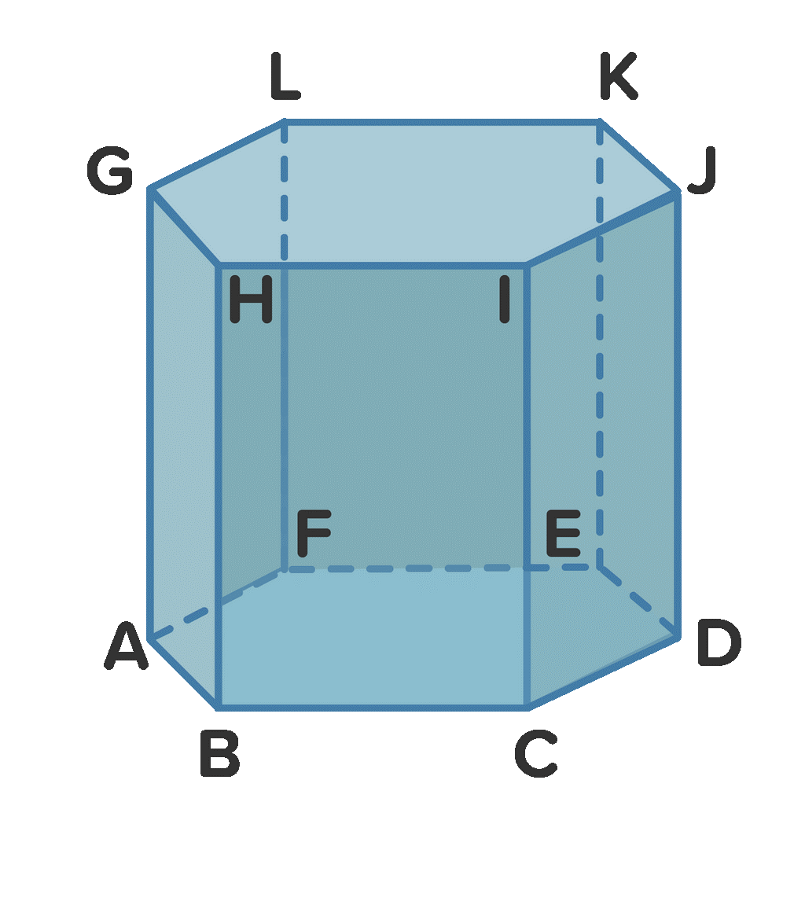

- Prisma segitiga memiliki 5 bidang sisi
- Sisi alas dan sisi atas, atau disebut tutup prisma segitiga, bentuknya berupa segitiga
- Sisi tegak prisma berbentuk persegi panjang
- Memiliki 9 rusuk
- Memiliki 6 titik sudut
- Memiliki 6 diagonal sisi
- Sisi sampingnya berbentuk persegi panjang
Materi 1: Prisma
Apa itu bangun ruang prisma? Ayo, amati sifat-sifat bangun ruang prisma!
Pada aktivitas ini, kalian akan mempelajari tentang prisma. Kita akan memperhatikan bagaimana prisma memiliki bidang-bidang yang memiliki sifat khusus.
Intruksi dan Petunjuk pengerjaan
- Amati dengan seksama gambar-gambar prisma yang tersedia
- Perhatikan bidang yang berwarna pada masing-masing gambar. Perhatikan bangun ruang yang mempunyai bidang yang sejajar berikut
- Jawablah pertanyaan yang diberikan.
- Jawablah Kotak kosong dibawah ini dengan diawali huruf besar lalui di ikuti huruf kecil 
Bangun ruang seperti A, B, C, D disebut prisma. Prisma ialah bangun ruang yang mempunyai dua bidang yang sejajar dan kongruen.
- Sisi adalah bidang yang membatasi bangun ruang.
- Sisi alas adalah kedua bidang yang kongruen dan sejajar dari prisma.
- Sisi tegak adalah bidang segiempat yang mengitari alas.
- Rusuk adalah garis yang merupakan dari dua sisi bangun ruang
- Titik sudut adalah titik pertemuan dari tiga buah rusuk pada bangun ruang.
Prisma Segitiga
Prisma segitiga adalah sebuah bangun ruang yang memiliki sisi alas dan sisi atas yang ukurannya sama (kongruen) berbentuk segitiga. Berapa banyak sisi prisma segitiga? Prisma segitiga memiliki 5 sisi yang terdiri dari satu sisi alas, satu sisi atas, dan tiga sisi vertikal.
Prisma segitiga terdiri dari beberapa jenis, yaitu:
- Prisma segitiga siku-siku: sisi alas dan atap prisma ini berbentuk segitiga siku-siku.
- Prisma segitiga sama kaki: sisi alas dan atap prisma berbentuk segitiga sama kaki.
- Prisma segitiga sama sisi: sisi alas dan atap prisma berbentuk segitiga sama sisi.
- Prisma segitiga sembarang: sisi alas dan atapnya berbentuk segitiga sembarang.
Rusuk merupakan salah satu unsur bangun ruang yang tentu saja juga dimiliki prisma segitiga. Rusuk prisma segitiga adalah garis lurus yang membangun prisma tersebut. Rusuk prisma tegak segitiga sebanyak 9 rusuk. Jika setiap sudut ditandai dengan huruf A sampai F seperti pada gambar di bawah, maka prisma segitiga rusuk adalah sebagai berikut: AB, AC, BC, AD, BF, CE, DE, DF, dan EF.
Unsur lain yang perlu diketahui dari prisma segitiga adalah titik sudutnya. Banyaknya titik sudut pada prisma segitiga adalah 6 buah. Dari gambar di atas, sudutnya dapat disebut sebagai sudut A, sudut B, sudut C, sudut D, sudut E, dan sudut F.
Supaya bisa lebih mengenal prisma segitiga, berikut ini beberapa ciri-cirinya yang perlu kamu pelajari:
Prisma Segiempat
Prisma segiempat adalah prisma yang alas dan tutupnya berbentuk bangun datar segiempat. Prisma segiempat mempunyai 6 buah sisi yaitu 1 alas, 1 tutup, dan 4 sisi vertikal. Prisma segiempat juga sering dikenal dengan kubus atau balok. Dinamakan kubus jika semua sisinya mempunyai panjang yang sama.
Rusuk prisma segiempat adalah garis lurus yang membangun prisma tersebut. Rusuk prisma tegak segiempat sebanyak 12 rusuk. Jika setiap sudut ditandai dengan huruf K sampai R seperti pada gambar di bawah, maka prisma segiempat rusuk adalah sebagai berikut: KL, LM, MN, NK, KO, NR, LP, MQ, OP, PQ, QR, OR.
Unsur lain yang perlu diketahui dari prisma segiempat adalah titik sudutnya. Banyaknya titik sudut pada prisma segiempat adalah 8 buah. Dari gambar di atas, sudutnya dapat disebut sebagai sudut K, sudut L, sudut M, sudut N, sudut O, dan sudut P, sudut Q, sudut R.
Supaya bisa lebih mengenal prisma segiempat, berikut ini beberapa ciri-cirinya yang perlu kamu pelajari:
- Prisma segiempat memiliki 6 bidang sisi
- Prisma segiempat memiliki 6 bidang sisi
- Memiliki 12 rusuk
- Memiliki 8 titik sudut
- Memiliki 12 diagonal sisi
- Sisi sampingnya berbentuk persegi panjang
Prisma Segi-𝑛
Prisma segi 𝑛 adalah prisma yang alas dan tutupnya berbentuk datar segi 𝑛. Segi 𝑛 dapat berupa segilima, enam, tujuh, dan seterusnya.
Jika 𝑛 sampai tak terhingga, maka alas prisma akan terbentuk setengah lingkaran. Prisma segi 𝑛 dengan 𝑛 yang tak terhingga sering disebut sebagai tabung.
- Banyak rusuk pada prisma segi-n adalah tiga kali dari banyak seginya (3𝑛).
- 𝑛 rusuk di salah satu sisi alas atas
- 𝑛 rusuk di sisi alas bawah
- 𝑛 rusuk yang menghubungkan titik sudut alas yang sesuai.
- Banyak sisi pada prisma segi-n adalah jumlah seginya ditambah dengan sisi atas dan bawahnya (𝑛+2).
- 2 sisi alas (atas dan bawah)
- 𝑛 sisi tegak yang berbentuk persegi panjang yang menghubungkan titik sudut alas atas dan alas bawah.
- Jumlah titik sudut pada prisma adalah dua kali jumlah seginya (2𝑛). Setiap alas memiliki 𝑛 titik sudut, dan karena ada dua alas, maka jumlah total titik sudut adalah 2𝑛.
- Prisma segilima
- Prisma segienam
Prisma segilima adalah bangun ruang tiga dimensi yang mempunyai atap serta alas yang bentuknya segilima dan mempunyai selimut yang bentuknya persegi panjang pada sisi samping.

Rusuk prisma tegak segilima sebanyak 15 rusuk. Jika setiap sudut ditandai dengan huruf A sampai J seperti pada gambar di bawah, maka prisma segilima rusuk adalah sebagai berikut: AB, BC, CD, DE, EA, FG, GH, HI, IJ, JF, AF, BG, CH, DI, EJ.
Unsur lain yang perlu diketahui dari prisma segilima adalah titik sudutnya. Banyaknya titik sudut pada prisma segilima adalah 10 buah. Dari gambar di atas, sudutnya dapat disebut sebagai sudut A, sudut B, sudut C, sudut D, sudut E, dan sudut F, sudut G, sudut H, sudut I, sudut J.
Prisma segienam adalah bangun ruang tiga dimensi yang mempunyai alas serta juga atap yang bentuknya segienam, serta mempunyai selimut yang bentuknya adalah persegi panjang pada sisi samping.
Rusuk prisma tegak segienam sebanyak 18 rusuk. Jika setiap sudut ditandai dengan huruf A sampai L seperti pada gambar di bawah, maka prisma segienam rusuk adalah sebagai berikut: AB, BC, CD, DE, EF, FA, GH, HI, IJ, JK, KL, LG, AG, BH, CI, DJ, EK, FL.
Unsur lain yang perlu diketahui dari prisma segienam adalah titik sudutnya. Banyaknya titik sudut pada prisma segienam adalah 12 buah. Dari gambar di atas, sudutnya dapat disebut sebagai sudut A, sudut B, sudut C, sudut D, sudut E, sudut F, sudut G, sudut H, sudut I, sudut J, sudut K, sudut L.
Supaya bisa lebih mengenal prisma segi-𝑛, berikut ini beberapa ciri-cirinya yang perlu kamu pelajari:
- Prisma segi-𝑛 memiliki (𝑛 +2) bidang sisi
- Sisi alas prisma berbentuk datar segi n.
- Sisi tegak prisma berbentuk persegi panjang
- Memiliki (3𝑛) rusuk
- Memiliki (2𝑛) titik sudut
- Memiliki 𝑛 (𝑛 -1) diagonal sisi
- Sisi sampingnya berbentuk persegi panjang
Jika kita membedakan sisi pada sisi alas dan pada sisi tegak, semua prisma mempunyai dua sisi alas. Apa hubungan antara kolom titik sudut, rusuk, sisi dari prisma segi-n? Pada prisma segitiga, jumlah dari banyak titik sudut dengan banyak sisi tegak yang terhubung sama dengan banyak rusuk.
Pertanyaan:
Tentukan titik sudut, rusuk, dan sisi prisma segitiga
Penyelesaian:
Prisma segitiga (𝑛=3):
- Titik sudut
Rumus: 2 𝑛
Titik sudut prisma segitiga = 2 𝑛 = 2 x 3 = 6 - Rusuk
Rumus: 3 𝑛
Rusuk prisma segitiga = 3 𝑛 = 3 x 3 = 9 - Banyak sisi
Rumus: 𝑛 + 2
Banyak sisi prisma segitiga = 𝑛 + 2 = 3 + 2 = 5
Dalam prisma segi-𝑛, bilangan titik sudut, rusuk, dan sisi selalu terkait dengan jumlah sisi alas (𝑛). Hubungan ini membantu dalam memahami struktur dan sifat-sifat geometri dari prisma segi-𝑛.
Kalian sudah belajar tentang berbagai macam prisma dan bagaimana menentukan titik sudut, rusuk, dan banyak sisinya. Sekarang, mari kita praktekkan pengetahuan kalian!
Intruksi:
- Perhatikan gambar prisma dengan baik
- Hitunglah jumlah titik sudut pada prisma tersebut dan tuliskan di kolom "Titik Sudut"
- Hitunglah jumlah rusuk pada prisma tersebut dan tuliskan di kolom "Rusuk"
- Hitunglah jumlah sisi pada prisma tersebut dan tuliskan di kolom "Sisi"
Tabel Prisma:
Intruksi
- Bacalah setiap pertanyaan dengan seksama
- Pilihlah jawaban yang sesuai dari daftar pilihan jawaban yang tersedia dengan menuliskan hurufnya saja.
- Jika jawaban kamu benar maka kotak akan berwarna "Hijau".
- Jika jawaban kamu salah maka kotak akan berwarna "Merah", silahkan coba lagi.
Pilihan Jawaban:
- 11, 27,18
- Prisma Segitiga
- 5 dan 9
- Prisma Segiempat
- (DEF) dan (AD, BE, CF)